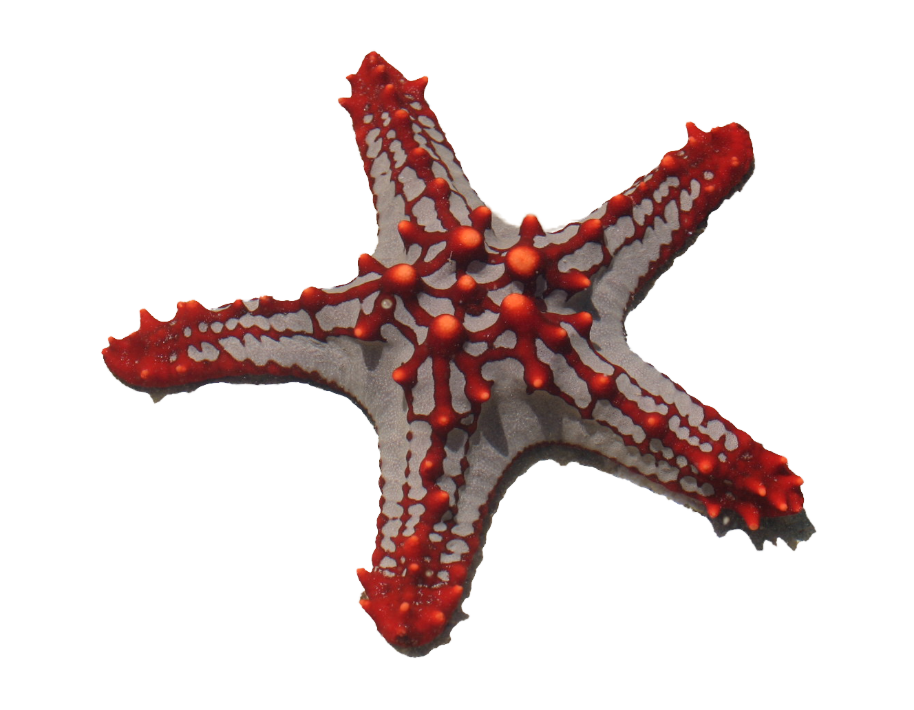

바다생물사전
바다생물사전


바다거북 sea turtle

분류 | 동물계>척삭동물문>파충강>거북목>잠경아목>바다거북상과
학명 | Chelonia mydas japonica
바다거북은 육지거북과 전체 모양은 비슷하지만, 해양환경에 적응해 변화한 곳이 있다. 바다거북은 수중생활에 적응하도록 다리가 지느러미로 변하였고 몸의 형태도 헤엄칠 때 물의 저항을 줄이기 위한 유선형 형태를 갖추고 있다. 육상거북과 달리 바다거북은 머리와 다리를 등껍데기 안으로 집어넣을 수 없다. 바다거북은 바다에서 일생을 보내며, 산란할 때에만 자기가 태어난 바닷가로 되돌아온다. 바다거북은 허파로 공기호흡을 하므로, 숨을 쉬기 위해 수면 위로 머리를 내민다.
학명 | Chelonia mydas japonica
바다거북은 육지거북과 전체 모양은 비슷하지만, 해양환경에 적응해 변화한 곳이 있다. 바다거북은 수중생활에 적응하도록 다리가 지느러미로 변하였고 몸의 형태도 헤엄칠 때 물의 저항을 줄이기 위한 유선형 형태를 갖추고 있다. 육상거북과 달리 바다거북은 머리와 다리를 등껍데기 안으로 집어넣을 수 없다. 바다거북은 바다에서 일생을 보내며, 산란할 때에만 자기가 태어난 바닷가로 되돌아온다. 바다거북은 허파로 공기호흡을 하므로, 숨을 쉬기 위해 수면 위로 머리를 내민다.
바다뱀 sea snake
분류 | 동물계>척삭동물문>조기어강>뱀장어목>바다뱀과
학명 | Ophisurus macrorhyunchus
해양 환경에 적응한 뱀으로, 가늘고 긴 몸을 가지고 있다. 위턱이 아래턱보다 앞쪽으로 조금 튀어나와 있으며 날카로운 송곳니가 4개씩 나있다. 가슴지느러미는 비교적 작고 몸의 가운데에 위치한다. 등지느러미와 뒷지느러미는 기저의 길이가 길고 높이가 낮으며 꼬리 끝에서 중단된다. 모든 지느러미는 황색, 갈색을 띈다. 몸의 길이는 약 1~1.5m이다.
학명 | Ophisurus macrorhyunchus
해양 환경에 적응한 뱀으로, 가늘고 긴 몸을 가지고 있다. 위턱이 아래턱보다 앞쪽으로 조금 튀어나와 있으며 날카로운 송곳니가 4개씩 나있다. 가슴지느러미는 비교적 작고 몸의 가운데에 위치한다. 등지느러미와 뒷지느러미는 기저의 길이가 길고 높이가 낮으며 꼬리 끝에서 중단된다. 모든 지느러미는 황색, 갈색을 띈다. 몸의 길이는 약 1~1.5m이다.
고래상어 whale shark
분류 | 동물계>척삭동물문>연골어강>수염상어목>고래상어과
학명 | Rhincodon typus
몸길이는 보통 12m 내외이며, 최대 18m까지 자라는 것으로 알려져 있다. 몸무게는 15~20t에 달한다. 몸은 굵고 길며, 머리는 조금 납작한 형태이다. 몸 빛깔은 등 쪽은 회색, 배 쪽은 흰색이고 등 위로는 흰 점과 옅은 수직 줄무늬가 나 있다. 거대한 몸집과는 달리 성격이 온순하며 오징어, 새우, 플랑크톤 등 작은 물고기를 여과해서 섭취한다. 보통 먼 바다에서 단독 또는 무리를 지어 생활하며, 가끔 연안에도 나타난다. 멸종위기종으로 분류되어 보호되고 있다.
학명 | Rhincodon typus
몸길이는 보통 12m 내외이며, 최대 18m까지 자라는 것으로 알려져 있다. 몸무게는 15~20t에 달한다. 몸은 굵고 길며, 머리는 조금 납작한 형태이다. 몸 빛깔은 등 쪽은 회색, 배 쪽은 흰색이고 등 위로는 흰 점과 옅은 수직 줄무늬가 나 있다. 거대한 몸집과는 달리 성격이 온순하며 오징어, 새우, 플랑크톤 등 작은 물고기를 여과해서 섭취한다. 보통 먼 바다에서 단독 또는 무리를 지어 생활하며, 가끔 연안에도 나타난다. 멸종위기종으로 분류되어 보호되고 있다.
쏠배감펭 lion fish

분류 | 동물계>척삭동물문>경골어강>쏨벵이목>양볼락과
학명 | Pterois lunulata
몸길이는 약 30cm 내외이며 몸과 머리는 옆으로 납작하고, 몸은 방추형의 형태이다. 머리는 원뿔모양이며 정수리는 울퉁불퉁하다. 코와 눈 주위에는 가시가 많이 있다. 등지느러미와 가슴지느러미가 길고, 등지느러미 가시에는 독샘이 있다. 몸빛깔은 연한 붉은색이며 옆구리에 흑갈색의 가로 줄무늬가 있다. 지느러미에는 흑갈색 반점이 가로로 줄지어 있다. 수심이 얕고 바닥이 암초로 이루어진 연안의 따뜻한 물에서 서식한다. 먹이로는 어류와 갑각류를 잡아먹는다.
학명 | Pterois lunulata
몸길이는 약 30cm 내외이며 몸과 머리는 옆으로 납작하고, 몸은 방추형의 형태이다. 머리는 원뿔모양이며 정수리는 울퉁불퉁하다. 코와 눈 주위에는 가시가 많이 있다. 등지느러미와 가슴지느러미가 길고, 등지느러미 가시에는 독샘이 있다. 몸빛깔은 연한 붉은색이며 옆구리에 흑갈색의 가로 줄무늬가 있다. 지느러미에는 흑갈색 반점이 가로로 줄지어 있다. 수심이 얕고 바닥이 암초로 이루어진 연안의 따뜻한 물에서 서식한다. 먹이로는 어류와 갑각류를 잡아먹는다.
정어리 sardine
분류 | 동물계>척삭동물문>조기어강>청어목>청어과
학명 | Sardinops sagax
등쪽이 푸르고 몸의 중앙과 배쪽은 은백색을 띄며 경계 지점에 6~9개의 둥근 검은색 점이 있다. 몸의 길이는 약 25cm이다. 산란기는 12~6월이며 우리나라에서의 주된 산란기는 2~4월이다. 수십만에서 수백만 마리가 떼를 지어 다니며 일정한 간격을 유지하면서 질서정연하게 헤엄친다. 방어력이 거의 없고 떼로 다니기 때문에 대형 물고기의 먹이가 된다. 지역 방언으로 ‘눈치’, ‘순봉이’, ‘징어리’라고 불리기도 한다.
학명 | Sardinops sagax
등쪽이 푸르고 몸의 중앙과 배쪽은 은백색을 띄며 경계 지점에 6~9개의 둥근 검은색 점이 있다. 몸의 길이는 약 25cm이다. 산란기는 12~6월이며 우리나라에서의 주된 산란기는 2~4월이다. 수십만에서 수백만 마리가 떼를 지어 다니며 일정한 간격을 유지하면서 질서정연하게 헤엄친다. 방어력이 거의 없고 떼로 다니기 때문에 대형 물고기의 먹이가 된다. 지역 방언으로 ‘눈치’, ‘순봉이’, ‘징어리’라고 불리기도 한다.
성게 sea urchin

분류 | 동물계>극피동물문>성게강
학명 | Echinoidea
몸에 가시가 있는 공 모양의 해양 무척추동물이다. 몸은 둥근 모양, 원반 모양 또는 심장 모양이고 몸의 아랫부분은 일반적으로 평평한 형태를 가지고 있다. 몸에 돋은 각각의 가시에는 근육이 연결되어 있어 몸을 보호할 뿐만 아니라 이동하는 데 사용된다. 가시 돋은 형태로 인해 ‘바다 속의 밤송이’, ‘밤송이조개’등으로도 불렸다. 성게는 야행성 동물로, 낮에는 빛이 들어오지 않는 바위 사이에 숨어있다가 밤이 되면 바위에서 기어나와 해조류나 감태 등을 뜯어먹는다. 열대 해역에서 발견되는 성게 중에는 가시에 강한 독을 가진 종도 있지만 국내에서 발견되는 보라성게, 분홍성게 등은 가시에 독이 없다.
학명 | Echinoidea
몸에 가시가 있는 공 모양의 해양 무척추동물이다. 몸은 둥근 모양, 원반 모양 또는 심장 모양이고 몸의 아랫부분은 일반적으로 평평한 형태를 가지고 있다. 몸에 돋은 각각의 가시에는 근육이 연결되어 있어 몸을 보호할 뿐만 아니라 이동하는 데 사용된다. 가시 돋은 형태로 인해 ‘바다 속의 밤송이’, ‘밤송이조개’등으로도 불렸다. 성게는 야행성 동물로, 낮에는 빛이 들어오지 않는 바위 사이에 숨어있다가 밤이 되면 바위에서 기어나와 해조류나 감태 등을 뜯어먹는다. 열대 해역에서 발견되는 성게 중에는 가시에 강한 독을 가진 종도 있지만 국내에서 발견되는 보라성게, 분홍성게 등은 가시에 독이 없다.
씬벵이 frog fish

분류 | 동물계>척삭동물문>조기강>아귀목>씬벵이과
학명 | Pterophryne histrio
크기는 약 10~25cm로, 몸의 크기는 작고 타원형이다. 등 지느러미는 머리의 등쪽에서부터 뒤쪽으로 3개의 가시를 가지고 있으며 주둥이의 등쪽에는 1개의 먹이 유인용 돌기가 길게 나있다. 아래턱이 머리의 앞쪽으로 나와있고 위턱의 뒤끝은 눈의 앞가장자리에 달한다. 입은 경사가 심하고 양 턱에는 날카로운 이빨이 여러 줄 나있다. 눈은 작고 머리 등쪽에 치우쳐있다. 가슴 지느러미와 꼬리 지느러미는 가장자리가 둥글다. 연안성 어류로, 수심 200m 이내의 모래 바닥이나 모래가 섞인 펄질에서 주로 서식한다.
학명 | Pterophryne histrio
크기는 약 10~25cm로, 몸의 크기는 작고 타원형이다. 등 지느러미는 머리의 등쪽에서부터 뒤쪽으로 3개의 가시를 가지고 있으며 주둥이의 등쪽에는 1개의 먹이 유인용 돌기가 길게 나있다. 아래턱이 머리의 앞쪽으로 나와있고 위턱의 뒤끝은 눈의 앞가장자리에 달한다. 입은 경사가 심하고 양 턱에는 날카로운 이빨이 여러 줄 나있다. 눈은 작고 머리 등쪽에 치우쳐있다. 가슴 지느러미와 꼬리 지느러미는 가장자리가 둥글다. 연안성 어류로, 수심 200m 이내의 모래 바닥이나 모래가 섞인 펄질에서 주로 서식한다.
트럼펫피쉬 trumpet fish

분류 | 동물계>척삭동물문>조기강>실고기목
학명 | Aulostomus chinensis
가늘고 긴 트럼펫처럼 생긴 물고기이다. 크기는 보통 40~80cm로 긴 형태이다. 색깔은 환경에 따라 어두운 색, 황색, 줄무늬 등 다양하게 변이된다. 수심이 얕은 암초 지대나 산호초가 많은 지역에 서식하며 주변환경에 숨어있다가 작은 물고기나 갑각류 등을 긴 주둥이로 순식간에 낚아채서 잡아먹는다. 다른 물고기 주위에 붙어 헤엄치는 특성이 있다.
학명 | Aulostomus chinensis
가늘고 긴 트럼펫처럼 생긴 물고기이다. 크기는 보통 40~80cm로 긴 형태이다. 색깔은 환경에 따라 어두운 색, 황색, 줄무늬 등 다양하게 변이된다. 수심이 얕은 암초 지대나 산호초가 많은 지역에 서식하며 주변환경에 숨어있다가 작은 물고기나 갑각류 등을 긴 주둥이로 순식간에 낚아채서 잡아먹는다. 다른 물고기 주위에 붙어 헤엄치는 특성이 있다.
산호 coral

분류 | 동물계>자포동물문>산호충강
학명 | Anthozoa
산호는 강장과 작은 입을 가진 개체인 산호충들이 모여있는 군체로, 자포동물에 속한다. 산호충은 입 부분의 촉수를 이용해 동물성 플랑크톤을 잡아먹는다. 산호는 단단한 외골격이 있느냐 없느냐에 따라 경산호와 연산호로 구분된다. 경산호는 체외에 석회질로 된 골격이 있어 딱딱한 편이고 연산호는 외골격 대신 작은 가시로 이루어져 있어 무른 편이다. 먹이를 잡기 위해 촉수를 사용하는데, 낮에는 오므리고 있다가 밤에는 촉수를 펼치고 있다가 먹이가 촉수에 닿으면 재빨리 자포를 발사해 먹이를 기절시켜 입을 통해 강장으로 집어넣는다.
학명 | Anthozoa
산호는 강장과 작은 입을 가진 개체인 산호충들이 모여있는 군체로, 자포동물에 속한다. 산호충은 입 부분의 촉수를 이용해 동물성 플랑크톤을 잡아먹는다. 산호는 단단한 외골격이 있느냐 없느냐에 따라 경산호와 연산호로 구분된다. 경산호는 체외에 석회질로 된 골격이 있어 딱딱한 편이고 연산호는 외골격 대신 작은 가시로 이루어져 있어 무른 편이다. 먹이를 잡기 위해 촉수를 사용하는데, 낮에는 오므리고 있다가 밤에는 촉수를 펼치고 있다가 먹이가 촉수에 닿으면 재빨리 자포를 발사해 먹이를 기절시켜 입을 통해 강장으로 집어넣는다.
갯민숭달팽이 nudibranch
분류 | 동물계>연체동물문>복족강>나새목
학명 | nudibranchia
성체 기준 크기는 4mm에서 60cm까지 종에 따른 크기가 다양하다. 현재까지 전 세계에 약 3000종이 보고되고 있으며 형태와 색상도 종에 따라 다양하다. 영어 이름인 nudibranch(누디브랜치)는 ‘벌거벗은’이라는 뜻의 라틴어 ‘nudus’와 ‘아가미’라는 뜻의 그리스어 ‘brankhia’에서 유래되었다. ‘벗은 아가미’라는 뜻처럼 아가미가 외부에 노출되어 있으며, 대부분의 연체동물과 다르게 껍데기 없이 몸이 노출되어 있는 것이 특징이다.
학명 | nudibranchia
성체 기준 크기는 4mm에서 60cm까지 종에 따른 크기가 다양하다. 현재까지 전 세계에 약 3000종이 보고되고 있으며 형태와 색상도 종에 따라 다양하다. 영어 이름인 nudibranch(누디브랜치)는 ‘벌거벗은’이라는 뜻의 라틴어 ‘nudus’와 ‘아가미’라는 뜻의 그리스어 ‘brankhia’에서 유래되었다. ‘벗은 아가미’라는 뜻처럼 아가미가 외부에 노출되어 있으며, 대부분의 연체동물과 다르게 껍데기 없이 몸이 노출되어 있는 것이 특징이다.
해마 sea horse

분류 | 동물계>척삭동물문>조기강>큰가시고기목>실고기과>해마속
학명 | Hippocampus
겉모습이 말을 닮은 물고기로, 바다의 말이라는 뜻의 이름을 가지고 있다. 몸의 크기는 6~10cm로 작은 편이다. 가늘고 긴 주둥이를 이용해 물을 빨아들인 후 플랑크톤이나 작은 새우 등을 섭취한다. 평소에는 등에 붙어있는 하나의 지느러미로 몸을 곤두세운 채 헤엄치다가 조류가 느껴지면 산호 등에 꼬리를 감고 매달린다. 그래서 깊은 바다로 내려가지 못하고 산호나 해조류 등이 풍부한 얕은 수심의 연안에서 산다. 일부일처제로 살아가며 수컷이 새끼를 낳는다는 특징이 있다.
학명 | Hippocampus
겉모습이 말을 닮은 물고기로, 바다의 말이라는 뜻의 이름을 가지고 있다. 몸의 크기는 6~10cm로 작은 편이다. 가늘고 긴 주둥이를 이용해 물을 빨아들인 후 플랑크톤이나 작은 새우 등을 섭취한다. 평소에는 등에 붙어있는 하나의 지느러미로 몸을 곤두세운 채 헤엄치다가 조류가 느껴지면 산호 등에 꼬리를 감고 매달린다. 그래서 깊은 바다로 내려가지 못하고 산호나 해조류 등이 풍부한 얕은 수심의 연안에서 산다. 일부일처제로 살아가며 수컷이 새끼를 낳는다는 특징이 있다.
놀래기 wrasse
분류 | 동물계>척삭동물문>조기어강>농어목>놀래기과
학명 | Labridae
색상이 다른 물고기들에 비해 화려하며 크기도 다소 작은 편에 속한다. 국내에서도 서해를 제외한 대부분 연안에 서식하는 어류로, 봄에서 가을 사이에는 3~5m의 얕은 물에서 서식하다가 겨울에 수온이 떨어지면 깊은 곳으로 이동해 월동을 한다. 주행성 어류로, 낮에는 먹이 활동을 하고 밤에는 깊은 곳에 들어가 잠을 잔다. 잠을 잘 때는 머리를 옆으로 하고 지느러미로 바닥의 모래를 파헤치고 모래 밑 2~3cm 아래로 들어간다. 국내에서는 보통 용치놀래기, 황놀래기, 어렝놀래기 등을 흔히 볼 수 있다.
학명 | Labridae
색상이 다른 물고기들에 비해 화려하며 크기도 다소 작은 편에 속한다. 국내에서도 서해를 제외한 대부분 연안에 서식하는 어류로, 봄에서 가을 사이에는 3~5m의 얕은 물에서 서식하다가 겨울에 수온이 떨어지면 깊은 곳으로 이동해 월동을 한다. 주행성 어류로, 낮에는 먹이 활동을 하고 밤에는 깊은 곳에 들어가 잠을 잔다. 잠을 잘 때는 머리를 옆으로 하고 지느러미로 바닥의 모래를 파헤치고 모래 밑 2~3cm 아래로 들어간다. 국내에서는 보통 용치놀래기, 황놀래기, 어렝놀래기 등을 흔히 볼 수 있다.
소라게 hermit crab

분류 | 동물계>절지동물문>연갑강>십각목>찹집게상과
학명 | Paguroidea
집게라고도 부르는 동물로, 고둥이나 소라 등 조개류의 껍데기에 들어가 살아가는 생물이다. 머리와 다리 부분 외에 나선형의 배와 꼬리 부분의 살이 연약해 몸을 보호하기 위해 껍데기에 들어가 산다. 고동껍데기 하나에 정착해 평생을 살아가는 것이 아니고, 몸이 성장할 때마다 적당한 크기의 고둥 껍데기를 찾아 이사를 한다. 소라게 중에는 말미잘을 등에 싣고 다니며 몸을 보호하는 ‘말미잘집게’와 같은 종도 존재한다. 이들은 말미잘 촉수의 자세포를 방어용 무기로 사용하며 포식 동물들로부터 본인을 보호한다.
학명 | Paguroidea
집게라고도 부르는 동물로, 고둥이나 소라 등 조개류의 껍데기에 들어가 살아가는 생물이다. 머리와 다리 부분 외에 나선형의 배와 꼬리 부분의 살이 연약해 몸을 보호하기 위해 껍데기에 들어가 산다. 고동껍데기 하나에 정착해 평생을 살아가는 것이 아니고, 몸이 성장할 때마다 적당한 크기의 고둥 껍데기를 찾아 이사를 한다. 소라게 중에는 말미잘을 등에 싣고 다니며 몸을 보호하는 ‘말미잘집게’와 같은 종도 존재한다. 이들은 말미잘 촉수의 자세포를 방어용 무기로 사용하며 포식 동물들로부터 본인을 보호한다.
오징어 squid

분류 | 동물계>연체동물문>두족강>십완상목
학명 | Decapodiformes
몸은 머리, 몸통, 다리의 3부분으로 이루어져있으며, 일반적으로 다리가 10개라고 알려져있다. 그러나 사실 4쌍의 다리와 1쌍의 먹이 포획용 더듬이가 있다. 오징어는 먹이를 잡거나 교미할 때 상대를 잡기 위한 수단으로 이 더듬이 팔을 사용한다. 오징어의 다리와 몸통 사이에 눈과 입이 있으며 이 부분이 머리이다. 두족류 특성상 피부의 색을 변화시킬 수 있는 능력이 있어 주변 환경에 맞게 적색, 황색, 갈색 등으로 몸의 색을 변화시킨다. 이러한 체색 변화는 오징어의 감정을 드러내는 의사 표현 수단으로도 쓰인다. 또한 위기에 처할 경우에는 먹물을 뿜어내며 의사 표현을 한다.
학명 | Decapodiformes
몸은 머리, 몸통, 다리의 3부분으로 이루어져있으며, 일반적으로 다리가 10개라고 알려져있다. 그러나 사실 4쌍의 다리와 1쌍의 먹이 포획용 더듬이가 있다. 오징어는 먹이를 잡거나 교미할 때 상대를 잡기 위한 수단으로 이 더듬이 팔을 사용한다. 오징어의 다리와 몸통 사이에 눈과 입이 있으며 이 부분이 머리이다. 두족류 특성상 피부의 색을 변화시킬 수 있는 능력이 있어 주변 환경에 맞게 적색, 황색, 갈색 등으로 몸의 색을 변화시킨다. 이러한 체색 변화는 오징어의 감정을 드러내는 의사 표현 수단으로도 쓰인다. 또한 위기에 처할 경우에는 먹물을 뿜어내며 의사 표현을 한다.
문어 octopus

분류 | 동물계>연체동물문>두족강>문어목
학명 | Octopoda
성체의 길이는 0.6~3m 정도이며, 무척추동물 중에서 지능이 가장 높은 편에 속한다. 이름인 문어 또한 ‘글월 문’ 한자가 사용되었으며 뇌가 복잡한 구조로 되어있어 간단한 문제를 해결할 수 있는 능력을 갖췄다. 몸 빛깔은 대체적으로 자갈색 또는 회식이지만 감정의 변화나 주변 환경의 변화에 따라 몸의 색을 바꿀 수 있다. 이러한 특성으로 오징어나 넙치 등과 함께 ‘바다의 카멜레온’이라고 불리기도 한다. 다리는 여덟개이며 각 다리에는 1-2줄로 빨판이 달려있다. 입에 있는 부리를 사용해 새우와 게, 고둥, 조개 등을 먹는다.
학명 | Octopoda
성체의 길이는 0.6~3m 정도이며, 무척추동물 중에서 지능이 가장 높은 편에 속한다. 이름인 문어 또한 ‘글월 문’ 한자가 사용되었으며 뇌가 복잡한 구조로 되어있어 간단한 문제를 해결할 수 있는 능력을 갖췄다. 몸 빛깔은 대체적으로 자갈색 또는 회식이지만 감정의 변화나 주변 환경의 변화에 따라 몸의 색을 바꿀 수 있다. 이러한 특성으로 오징어나 넙치 등과 함께 ‘바다의 카멜레온’이라고 불리기도 한다. 다리는 여덟개이며 각 다리에는 1-2줄로 빨판이 달려있다. 입에 있는 부리를 사용해 새우와 게, 고둥, 조개 등을 먹는다.
복어 blowfish

분류 | 동물계>척삭동물문>조기어강>복어목
학명 | Tetraodontiformes
몸놀림이 민첩하지 않으며 작은 지느러미를 가졌다. 그렇지만 껍질과 고기, 내장 등에 맹독 성분을 가지고 있어 포식자에게 치명상을 입힌다. 또한 복어 중 가시복어의 경우는 독 대신 몸에 긴 가시를 가지고 있다가 몸을 부풀려 가시들을 세워 포식자를 위협한다. 이렇게 몸을 부풀리는 것은 입으로 물을 마셔 위장 아랫부분의 ‘확장낭’이라는 주머니에 물을 채운 후 물이 빠져나가지 않도록 할 수 있기 떄문이다. 육식성으로 단단한 이빨과 턱을 가지고 있으며 새우, 게, 불가사리 등을 잡아먹는다. 단단한 이빨로 낚싯줄을 물어 끊기도 하며 물 위로 잡아 올렸을 때 이빨 가는 소리를 내기도 한다.
학명 | Tetraodontiformes
몸놀림이 민첩하지 않으며 작은 지느러미를 가졌다. 그렇지만 껍질과 고기, 내장 등에 맹독 성분을 가지고 있어 포식자에게 치명상을 입힌다. 또한 복어 중 가시복어의 경우는 독 대신 몸에 긴 가시를 가지고 있다가 몸을 부풀려 가시들을 세워 포식자를 위협한다. 이렇게 몸을 부풀리는 것은 입으로 물을 마셔 위장 아랫부분의 ‘확장낭’이라는 주머니에 물을 채운 후 물이 빠져나가지 않도록 할 수 있기 떄문이다. 육식성으로 단단한 이빨과 턱을 가지고 있으며 새우, 게, 불가사리 등을 잡아먹는다. 단단한 이빨로 낚싯줄을 물어 끊기도 하며 물 위로 잡아 올렸을 때 이빨 가는 소리를 내기도 한다.
두동가리돔 angel fish
분류 | 동물계>척삭동물문>경골어류>농어목>나비고기과
학명 | Heniochus acuminatus
최대 몸길이는 약 25cm이며 몸은 마름모꼴 형태에 체고가 높고 옆으로 납작하다. 주둥이는 원뿔 모양으로 튀어나와 있고 등지느러미의 가시가 실처럼 길게 이어져 있는 것이 특징이다. 몸의 빛깔은 청백색 바탕에 옆구리에 2개의 폭넓은 가로띠 줄무늬가 있다. 형태적으로 아름다운 열대 물고기로 관상어류로 분류된다. 동물플랑크톤과 무척추동물을 주로 먹는다.
학명 | Heniochus acuminatus
최대 몸길이는 약 25cm이며 몸은 마름모꼴 형태에 체고가 높고 옆으로 납작하다. 주둥이는 원뿔 모양으로 튀어나와 있고 등지느러미의 가시가 실처럼 길게 이어져 있는 것이 특징이다. 몸의 빛깔은 청백색 바탕에 옆구리에 2개의 폭넓은 가로띠 줄무늬가 있다. 형태적으로 아름다운 열대 물고기로 관상어류로 분류된다. 동물플랑크톤과 무척추동물을 주로 먹는다.
해파리 jellyfish

분류 | 동물계>자포동물문>해파리강
학명 | Scyphozoa
해파리는 대체로 투명하며 우산같이 생긴 몸체와 긴 촉수가 나있는 형태이다. 해파리는 근육의 수축을 통해 물을 아래쪽으로 밀어내며 그 반작용으로 이동한다. 그렇지만 이러한 반작용은 매우 약하기 때문에 대부분의 이동을 조류의 흐름에 의존한다. 촉수에 나있는 자포의 독침을 이용해 먹이를 잡아먹는다. 이러한 독은 사람에게도 치명적이어서 사망자가 발생하기도 한다. 해파리의 이름은 8개의 완을 가진 물고기라는 뜻의 ‘해팔어’에서 유래했다.
학명 | Scyphozoa
해파리는 대체로 투명하며 우산같이 생긴 몸체와 긴 촉수가 나있는 형태이다. 해파리는 근육의 수축을 통해 물을 아래쪽으로 밀어내며 그 반작용으로 이동한다. 그렇지만 이러한 반작용은 매우 약하기 때문에 대부분의 이동을 조류의 흐름에 의존한다. 촉수에 나있는 자포의 독침을 이용해 먹이를 잡아먹는다. 이러한 독은 사람에게도 치명적이어서 사망자가 발생하기도 한다. 해파리의 이름은 8개의 완을 가진 물고기라는 뜻의 ‘해팔어’에서 유래했다.
말미잘 sea anemone

분류 | 동물계>강장동물문>산호충강>해변말미잘목
학명 | Actiniaria
몸은 원통형이며 윗쪽에 입이 있고 주변에는 여러 개의 촉수가 나있다. 영어이름은 ‘sea anemone’로, 바다의 아네모네 꽃이라는 뜻을 가지고 있다. 화려한 촉수가 하늘거리는 모습은 바다의 꽃처럼 보인다. 말미잘의 화려한 촉수에는 독을 가진 자포가 있어 침입자로부터 몸을 보호하거나 먹잇감을 잡는 데 사용한다. 말미잘의 독은 사람 뿐만 아니라 바다동물들에게도 치명적이지만, 흰동가리는 말미잘의 독에 면역을 가지고 있어 말미잘을 보금자리로 삼아 살아간다.
학명 | Actiniaria
몸은 원통형이며 윗쪽에 입이 있고 주변에는 여러 개의 촉수가 나있다. 영어이름은 ‘sea anemone’로, 바다의 아네모네 꽃이라는 뜻을 가지고 있다. 화려한 촉수가 하늘거리는 모습은 바다의 꽃처럼 보인다. 말미잘의 화려한 촉수에는 독을 가진 자포가 있어 침입자로부터 몸을 보호하거나 먹잇감을 잡는 데 사용한다. 말미잘의 독은 사람 뿐만 아니라 바다동물들에게도 치명적이지만, 흰동가리는 말미잘의 독에 면역을 가지고 있어 말미잘을 보금자리로 삼아 살아간다.
돌고래 dolphin
분류 | 동물계>척삭동물문>포유동물강>고래목>돌고래과
학명 | Delphinus
돌고래라는 이름은 돼지의 옛 명칭인 ‘돝’과 ‘고래’가 합쳐진 데에서 유래했다. 주둥이가 앞으로 나온 모습이 돼지와 닮았다 해서 ‘물돼지’또는 ‘해돈’이라는 이름으로 불리기도 한다. 돌고래의 머리 앞부분에 있는 ‘멜론’이라는 기관에서 초음파를 발사하며 초음파의 신호를 이용해 물체를 인지하거나 먹잇감을 인지하는 데 사용한다. 아이큐는 약 80 정도로 높은 편이다. 단독행동을 거의 하지 않고 무리를 지어 살아간다. 함께 사냥을 하거나 새끼를 공동으로 기르기도 한다.
학명 | Delphinus
돌고래라는 이름은 돼지의 옛 명칭인 ‘돝’과 ‘고래’가 합쳐진 데에서 유래했다. 주둥이가 앞으로 나온 모습이 돼지와 닮았다 해서 ‘물돼지’또는 ‘해돈’이라는 이름으로 불리기도 한다. 돌고래의 머리 앞부분에 있는 ‘멜론’이라는 기관에서 초음파를 발사하며 초음파의 신호를 이용해 물체를 인지하거나 먹잇감을 인지하는 데 사용한다. 아이큐는 약 80 정도로 높은 편이다. 단독행동을 거의 하지 않고 무리를 지어 살아간다. 함께 사냥을 하거나 새끼를 공동으로 기르기도 한다.
만타가오리 manta ray

분류 | 동물계>척삭동물문>연골어강>홍어목>매가오릿과
학명 | Manta birostris
성체의 양쪽 지느러미 너비는 5~8m 정도이고, 무게는 0.5~1.5t에 이르며, 수명은 80년 이상 오래 사는 것으로 알려져 있다. 몸은 평평하고 넓으며 가슴지느러미의 연장부가 머리 지느러미 형태로 돌출되어 있는 것이 특징이다. 머리 지느러미는 길이가 폭의 두 배 정도 되며 물속의 플랑크톤을 모으는 데 사용한다. 꼬리에는 톱니를 가진 가시가 있지만 독은 존재하지 않는다. 열대, 아열대 지역에 분포해 있으며 햇빛이 잘 드는 표층에서 살아간다.
학명 | Manta birostris
성체의 양쪽 지느러미 너비는 5~8m 정도이고, 무게는 0.5~1.5t에 이르며, 수명은 80년 이상 오래 사는 것으로 알려져 있다. 몸은 평평하고 넓으며 가슴지느러미의 연장부가 머리 지느러미 형태로 돌출되어 있는 것이 특징이다. 머리 지느러미는 길이가 폭의 두 배 정도 되며 물속의 플랑크톤을 모으는 데 사용한다. 꼬리에는 톱니를 가진 가시가 있지만 독은 존재하지 않는다. 열대, 아열대 지역에 분포해 있으며 햇빛이 잘 드는 표층에서 살아간다.
백상아리 great white shark

분류 | 동물계>척삭동물문>연골어강>악상어목>악상어과>백상아리속
학명 | Carcharodon carcharias
최대 몸길이는 6.5m 내외이고 몸은 긴 형태이다. 등은 회색이고 배는 흰색을 띠고, 주둥이는 원뿔형에 날카로운 톱니 이빨을 가지고 있다. 상어 중 가장 난폭한 종으로 알려져 있으며 바다의 최상위 포식자에 속한다. 바다사자, 바다표범 등 큰 포유류부터 문어, 바다새, 상어 등 가리지 않고 포식한다. 대표적인 식인 상어로, 해수욕장이나 바다에서 인명피해가 발생하기도 한다.
학명 | Carcharodon carcharias
최대 몸길이는 6.5m 내외이고 몸은 긴 형태이다. 등은 회색이고 배는 흰색을 띠고, 주둥이는 원뿔형에 날카로운 톱니 이빨을 가지고 있다. 상어 중 가장 난폭한 종으로 알려져 있으며 바다의 최상위 포식자에 속한다. 바다사자, 바다표범 등 큰 포유류부터 문어, 바다새, 상어 등 가리지 않고 포식한다. 대표적인 식인 상어로, 해수욕장이나 바다에서 인명피해가 발생하기도 한다.
불가사리 starfish

분류 | 동물계>극피동물문>불가사리강>차극목>불가사리과
학명 | Asteroidea
일반적으로 별 모양의 몸을 가지고 있으며 5개의 팔을 가지고 있다. 표피는 종에 따라 매끄럽기도 하고 가시가 있는 경우도 있다. 색상이나 모양 또한 세부 종에 따라 다양한데, 일부 종은 다리의 개수가 더 많기도 하고 다리의 모양이 가늘고 긴 경우도 있다. 대부분의 불가사리는 팔이 손상되면 재생할 수 있는 능력이 있으며 방어수단으로 팔을 버리는 경우도 있다. 이런 강력한 재생력으로 인해 죽일 수 없다는 뜻의 ‘불가살이’에서 이름이 유래했다.
학명 | Asteroidea
일반적으로 별 모양의 몸을 가지고 있으며 5개의 팔을 가지고 있다. 표피는 종에 따라 매끄럽기도 하고 가시가 있는 경우도 있다. 색상이나 모양 또한 세부 종에 따라 다양한데, 일부 종은 다리의 개수가 더 많기도 하고 다리의 모양이 가늘고 긴 경우도 있다. 대부분의 불가사리는 팔이 손상되면 재생할 수 있는 능력이 있으며 방어수단으로 팔을 버리는 경우도 있다. 이런 강력한 재생력으로 인해 죽일 수 없다는 뜻의 ‘불가살이’에서 이름이 유래했다.
귀상어 hammerhead shark

분류 | 동물계>척삭동물문>연골어류>흉상어목>귀상어과
학명 | Sphyrna zygaena
머리가 망치처럼 생겨 망치상어, 망치머리상어라고도 불린다. 망치같이 생긴 머리 양 끝에 눈이 달려있는데, 이런 모양의 머리는 수온, 수압 등의 변화를 느낄 수 있고 위치 추적이 더욱 발달해있다. 상어 중에서도 사회성이 뛰어나 낮에는 많게는 100마리 이상이 모여 무리지어 살아간다. 몸길이는 최대 3.5m까지 자라며 주로 어류, 오징어류, 갑각류를 먹는다.
학명 | Sphyrna zygaena
머리가 망치처럼 생겨 망치상어, 망치머리상어라고도 불린다. 망치같이 생긴 머리 양 끝에 눈이 달려있는데, 이런 모양의 머리는 수온, 수압 등의 변화를 느낄 수 있고 위치 추적이 더욱 발달해있다. 상어 중에서도 사회성이 뛰어나 낮에는 많게는 100마리 이상이 모여 무리지어 살아간다. 몸길이는 최대 3.5m까지 자라며 주로 어류, 오징어류, 갑각류를 먹는다.